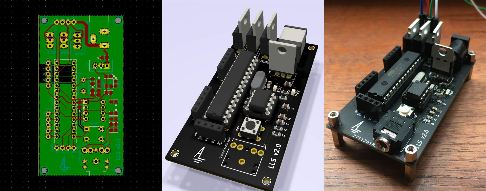
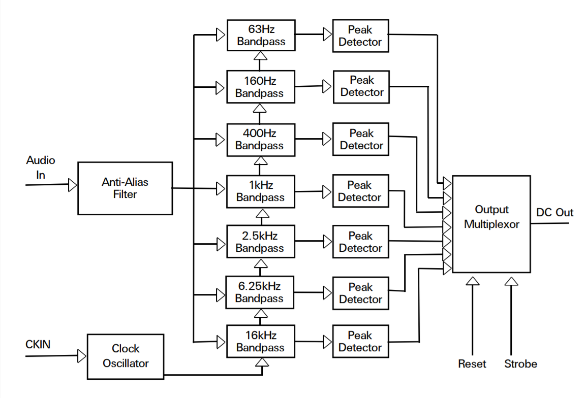
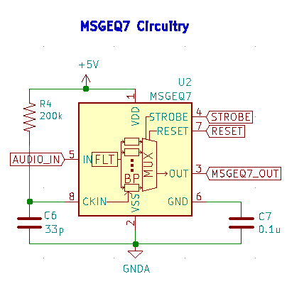
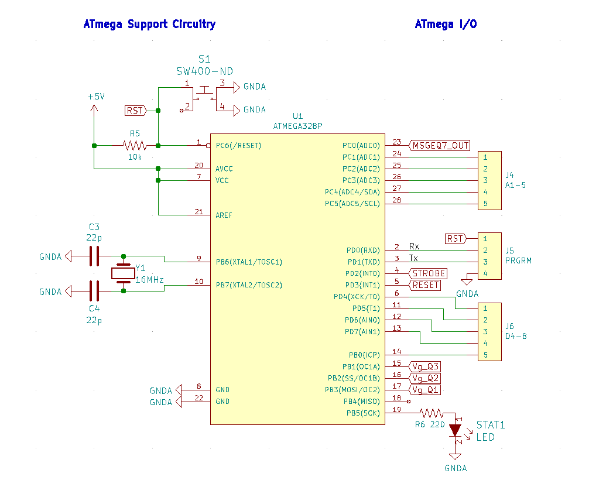
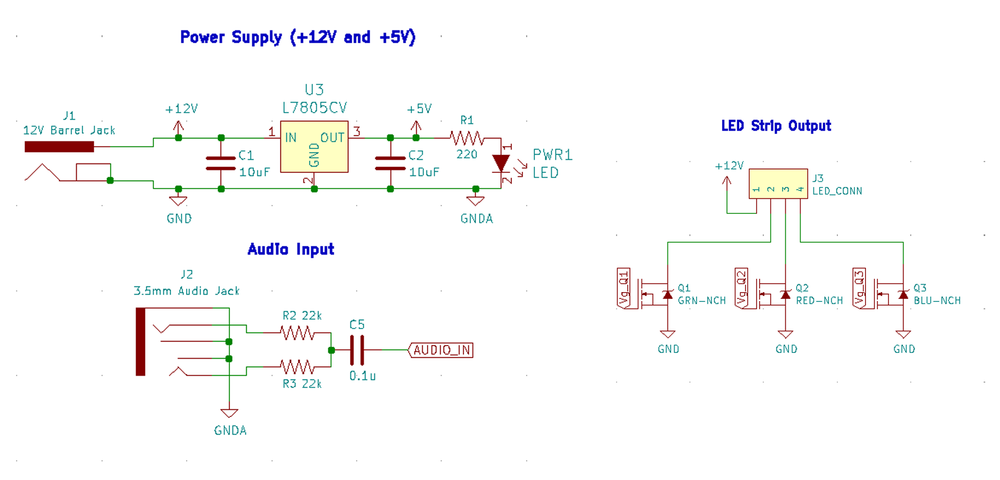
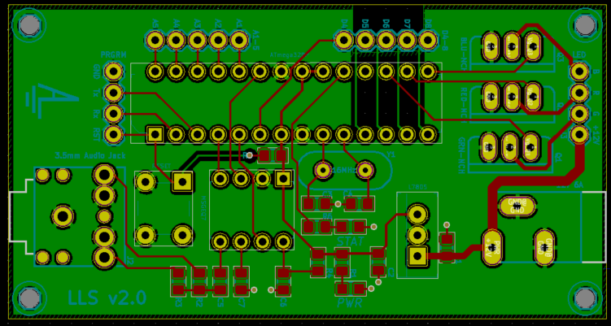

Music Reactive LEDs with MSGEQ7 & ATmega328p
2019-08-11

The Idea
Goal: to control the brightness of LEDs in proportion to the beat of the music!
First off, this project is not a unique one - it’s inspired by a sizable number of projects online - but it’s my own take.
The MSGEQ7 chip takes in an audio input, and gives a DC output corresponding to the relative ‘loudness’ of a set of frequencies present. An external chip pulses the STROBE pin to shift a multiplexer through outputting each of the different frequencies.

For this, we’ll be using an ATmega328p microcrontroller with and Arduino bootloader. It’ll interact with the MQGEQ7 and use the output to control the gate voltage for 3 transistors. The transistors are connected to the R,G,B channels of the LED strip, which will match the Bass, Mid, and Treble of the music respectively.
The Design
First off - the MSGEQ7 support circuitry. This matches the ‘typical application’ circuit in the datasheet. Nothing to change here.

Next, the microcontroller. Support circuitry on the left, I/O on the right. All unused I/O was kept available for future use with F breakout headers.

Below, all the auxiliary circuitry.
- Power Supply: The board will use the 12V power supply that came with the LEDs, stepped down with a linear regulator to 5V for the electronics.
- Audio Input: Wiring from the audio jack to the MQGEQ7 input, as suggested by the datasheet.
- LED Strip Output: Breakout headers connecting to the LEDs, and the transistor wiring.

Making the PCB
Given this project was my first actual PCB design, there was quite the learning curve. After a bit of research, KiCad won out as the tool of choice!
In the design, grounding was a big concern. The “analogWrite” function for Arduino digital pins is really a PWM signal that averages to the desired analog output voltage. With the LED drain currents at roughly 2-4A, this creates a lot of noise. If these currents were sunk to ground near the sensitive analog audio currents it would create enough interference to render the design worthless. This was noticed during breadboard testing of the circuit.
In consideration, the goals in the design process were:
- Physically separate the digital PWM and analog circuitry
- Run most traces on the top layer, to make a bottom ground plane as continuous as possible
- Allow for it to be reprogrammed on-board
- Keeping the board open to future improvements by including breakouts for unused ATmega pins
- Having it be small!

Eventually, this is the design that was reached! The transistor currents run from the top right down to the barrel jack right beside it, while the analog currents run from the left side. Breaking out the analog pins 1-5 with traces on the bottom was intentional, to add as a barrier between the two.
To achieve size and to test my soldering, all SMD components were an 805 footprint and all capacitors were ceramic.
The Code
More to come
Putting it All Together
More to come